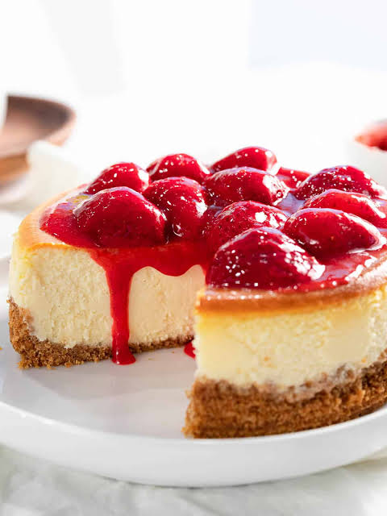

Strawberry Cheesecake

Description
A cheesecake rich enough that additions are not necessary.
Ingredients
- Cheesecake biscuit base and walls
- Cheesecake filling
- Four ingredient strawberry sauce
Steps
- Bash biscuits into crumbs, stir in melted butter. Any plain bicuit goes
- Filling. Cream cheese, sugar, lemon zest, vanilla, a tiny amount of flour and eggs
- Strawberry topping. Strawberries, sugar, cornflour or cornstarch, lemon juice, and vanilla.
Throw in saucepan, simmer for 10 minutes, stir through halved strawberries, cool then spread on cheesecake.
Home